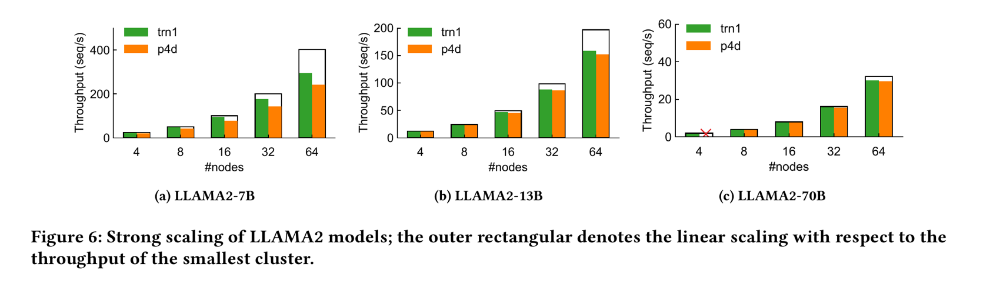

I built the official fine-tuning notebook for the Build on Trainium workshop at NeurIPS 2025 - Amazon's hands-on tutorial for training large language models on its custom Trainium AI accelerator chips. Several hundred researchers ran the notebook end-to-end during the workshop, and the code shipped as the canonical entry point in the public aws-neuron/neuron-workshops repository.
- I authored a reproducible PyTorch-on-Neuron finetuning workflow covering tokenization, distributed-training configuration, and inference benchmarking - runnable end-to-end in a single workshop session, and adopted as the canonical entry point for new Trainium users.
- I calibrated the notebook for Trainium's XLA-based compilation model, identifying which patterns trigger recompilation and how to amortize compile cost across multi-epoch training runs; the resulting recipe cuts cold-start compile time by roughly an order of magnitude on the workshop's reference model.
